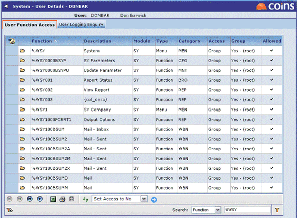

The function access permissions on a user's record are the "first port of call"; evaluates these first when determining whether to allow a user access to a function. The settings allow a user to be explicitly granted access to a function, or denied access, or access can be determined by user groups.
To change a user's access permissions
- Go to Users.
- Click the link in the User ID column of the user whose access permissions you want to change.
You cannot change the access rights for the Root group or SYSAdmin user.
- Click the User Function Access tab.

-
the function or functions you want to set permissions for.
- In the Choose Action list, select:
- Set Access to Yes to allow access (or to allow read only access if using Menu Item Security)
- Set Access to Yes-Update to allow update access (only available if you are using Menu Item Security)
- Set Access to No to prevent access.
- Set Access to Group to use the setting from the groups in the user's list. See Setting Function Access for a Group.
Unless you are using Menu Item Security, allowing access to a menu function does not automatically allow access to options below it in the hierarchy. If you allow access to a menu, but do not allow access to any of the functions on that menu, when the user selects the menu, they see a blank frame.
HINT: To change the permissions for a screen you also need to change the permissions for any associated functions (such as buttons, or options on the Choose Action menu). One way to do find out which functions are used is to press Ctrl+Shift+C to display the COINSinfo frame below the page. Scroll down to the list of Functions Used and copy the comma-separated function list. You can then paste this list into the simple filter in User Function Access and set the access for all the functions.